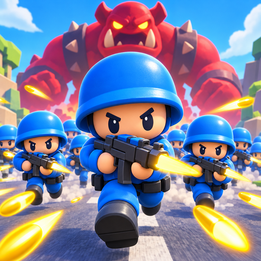

Questions, bugs or purchase problems: temveno@gmail.com. Please include your phone model and the level you were on.
Purchases belong to your App Store or Google Play account. After reinstalling or moving to a new phone, open Settings (the gear on the main menu) and tap Restore purchases.
Progress saves automatically on your device. There is no account, so progress does not move between devices.
Reward videos are always optional: you choose to watch one for a bonus. Short ads can appear between levels from level 3; Remove Ads (or the VIP Bundle) turns those off for good while keeping every optional reward.
Boss Rush, Endless March and Zombie Horde can each be played free once a day, with two more runs a day for watching a video. Each mode's pack, or the Everything Pass, removes the limit.
Open Settings and set Graphics to Low or Medium. Auto lowers it on its own if the frame rate drops.